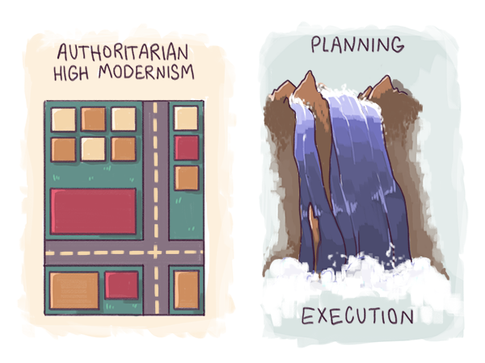

Agility and Illegibility
While pragmatic hacking was on the rise, purist approaches entered a period of slow, painful and costly decline. Even as they grew in ambition, software projects based on purist architecture and teams of interchangeable programmers grew increasingly unmanageable. They began to exhibit the predictable failure patterns of industrial age models: massive cost-overruns, extended delays, failed launches, damaging unintended consequences, and broken, unusable systems.

These failure patterns are characteristic of what political scientist James Scott1 called authoritarian high modernism: a purist architectural aesthetic driven by the authoritarian priorities. To authoritarian high-modernists, elements of the environment that do not conform to their purist design visions appear "illegible" and anxiety-provoking. As a result, they attempt to make the environment legible by forcibly removing illegible elements. Failures follow because important elements, critical to the functioning of the environment, get removed in the process.
Geometrically laid-out suburbs, for example, are legible and conform to platonic architectural visions, even if they are unlivable and economically stagnant. Slums on the other hand, appear illegible and are anxiety-provoking to planners, even when they are full of thriving economic life. As a result, authoritarian planners level slums and relocate residents into low-cost planned housing. In the process they often destroy economic and cultural vitality.
In software, what authoritarian architects find illegible and anxiety-provoking is the messy, unplanned tinkering hackers use to figure out creative solutions. When the pragmatic model first emerged in the sixties, authoritarian architects reacted like urban planners: by attempting to clear "code slums." These attempts took the form of increasingly rigid documentation and control processes inherited from manufacturing. In the process, they often lost the hacker knowledge keeping the project alive.
In short, authoritarian high modernism is a kind of tunnel vision. Architects are prone to it in environments that are richer than one mind can comprehend. The urge to dictate and organize is destructive, because it leads architects to destroy the apparent chaos that is vital for success.
The flaws of authoritarian high modernism first became problematic in fields like forestry, urban planning and civil engineering. Failures of authoritarian development in these fields resulted in forests ravaged by disease, unlivable "planned" cities, crony capitalism and endemic corruption. By the 1960s, in the West, pioneering critics of authoritarian models, such as the urbanist Jane Jacobs and the environmentalist Rachel Carson, had begun to correctly diagnose the problem.
By the seventies, liberal democracies had begun to adopt the familiar, more democratic consultation processes of today. These processes were adopted in computing as well, just as the early mainframe era was giving way to the minicomputer era.
Unfortunately, while democratic processes did mitigate the problems, the result was often lowered development speed, increased cost and more invisible corruption. New stakeholders brought competing utopian visions and authoritarian tendencies to the party. The problem now became reconciling conflicting authoritarian visions. Worse, any remaining illegible realities, which were anxiety-provoking to all stakeholders, were now even more vulnerable to prejudice and elimination. As a result complex technology projects often slowed to a costly, gridlocked crawl. Tyranny of the majority -- expressed through autocratic representatives of particular powerful constituencies -- drove whatever progress did occur. The biggest casualty was innovation, which by definition is driven by ideas that are illegible to all but a few: what Peter Thiel calls secrets -- things entrepreneurs believe that nobody else does, which leads them to unpredictable breakthroughs.
The process was most clearly evident in fields like defense. In major liberal democracies, different branches of the military competed to influence the design of new weaponry, and politicians competed to create jobs in their constituencies. As a result, major projects spiraled out of control and failed in predictable ways: delayed, too expensive and technologically compromised. In the non liberal-democratic world, the consequences were even worse. Authoritarian high modernism continued (and continues today in countries like Russia and North Korea), unchecked, wreaking avoidable havoc.
Software is no exception to this pathology. As high-profile failures like the launch of healthcare.gov2 show, "democratic" processes meant to mitigate risks tend to create stalled or gridlocked processes, compounding the problem.
Both in traditional engineering fields and in software, authoritarian high modernism leads to a Catch-22 situation: you either get a runaway train wreck due to too much unchecked authoritarianism, or a train that barely moves due to a gridlock of checks and balances.

Fortunately, agile software development manages to combine both decisive authority and pluralistic visions, and mitigate risks without slowing things to a crawl. The basic principles of agile development, articulated by a group of 17 programmers in 2001, in a document known as the Agile Manifesto, represented an evolution of the pragmatic philosophy first explicitly adopted by the IETF.
The cost of this agility is a seemingly anarchic pattern of progress. Agile development models catalyze illegible, collective patterns of creativity, weaken illusions of control, and resist being yoked to driving utopian visions. Adopting agile models leads individuals and organizations to gradually increase their tolerance for anxiety in the face of apparent chaos. As a result, agile models can get more agile over time.
Not only are agile models driving reform in software, they are also spreading to traditional domains where authoritarian high-modernism first emerged. Software is beginning to eat domains like forestry, urban planning and environment protection. Open Geographic Information Systems (GIS) in forestry, open data initiatives in urban governance, and monitoring technologies in agriculture, all increase information availability while eliminating cumbersome paperware processes. As we will see in upcoming essays, enhanced information availability and lowered friction can make any field hacker-friendly. Once a field becomes hacker-friendly, software begins to eat it. Development gathers momentum: the train can begin moving faster, without leading to train wrecks, resolving the Catch-22.
Today the shift from purist to pragmatist has progressed far enough that it is also reflected at the level of the economics of software development. In past decades, economic purists argued variously for idealized open-source, market-driven or government-led development of important projects. But all found themselves faced with an emerging reality that was too complex for any one economic ideology to govern. As a result, rough consensus and running economic mechanisms have prevailed over specific economic ideologies and gridlocked debates. Today, every available economic mechanism -- market-based, governmental, nonprofit and even criminal -- has been deployed at the software frontier. And the same economic pragmatism is spreading to software-eaten fields.
This is a natural consequence of the dramatic increase in both participation levels and ambitions in the software world. In 1943, only a small handful of people working on classified military projects had access to the earliest computers. Even in 1974, the year of Peak Centralization, only a small and privileged group had access to the early hacker-friendly minicomputers like the DEC PDP series. But by 1993, the PC revolution had nearly delivered on Bill Gates' vision of a computer at every desk, at least in the developed world. And by 2000, laptops and Blackberries were already foreshadowing the world of today, with near-universal access to smartphones, and an exploding number of computers per person.
The IETF slogan of rough consensus and running code (RCRC) has emerged as the only workable doctrine for both technological development and associated economic models under these conditions.
As a result of pragmatism prevailing, a nearly ungovernable Promethean fire has been unleashed. Hundreds of thousands of software entrepreneurs are unleashing innovations on an unsuspecting world by the power vested in them by "nobody in particular," and by any economic means necessary.
It is in the context of the anxiety-inducing chaos and complexity of a mass flourishing that we then ask: what exactly is software?
[1] James Scott, Seeing Like a State, 1999.
[2] The national health insurance portal of the United States, launched in 2013 as part of the Patient Protection and Affordable Healthcare Act.